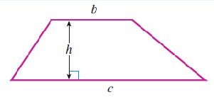
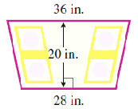

Algebraic expressions may involve two or more operations.
Activity5.2.1.Two Operations.
Emma can order T-shirts for her soccer team from a catalog for $5 each. She pays a $4 handling charge on her order.
Complete the table.
Number of T-shirts
3
5
8
10
(Calculation)
\(5(3) + 4\)
\(5(5) + 4\)
\(5(8) + 4\)
\(5(10) + 4\)
Total Cost
Describe in words how to find the total cost of Emma’s order.
Let \(t\) represent the number of T-shirts Emma orders. Write an algebraic expression for the total cost of her order.
Total cost =
Francisco is sharing a taxicab with 3 friends from the airport to the hotel. The four friends will share the fare equally, but Francisco will also tip the driver $5 for handling his luggage.
Complete the table.
Fare ($)
10
16
20
30
(Calculation)
\(\hphantom{000000}\)
\(\hphantom{000000}\)
\(\hphantom{000000}\)
\(\hphantom{000000}\)
Francisco’s share ($)
Describe in words how to compute Francisco’s share based on the fare.
If \(F\) represents the amount of the taxicab fare, write an algebraic expression for Francisco’s share.
Francisco’s share =
Some algebraic expressions involve more than one variable.
Example5.2.1.
Choose variables for each unknown quantity and write the following phrase as an algebraic expression.
\begin{equation*}
\text{The ratio of the interest earned to the amount invested.}
\end{equation*}
A formula is an equation that relates two or more variables, and usually helps us calculate some useful quantity. You probably know the formula for finding the area of a rectangle.
Substituting values for the variables on the right side of the formula is called evaluating the formula, just as we evaluate any other algebraic expression.
Example5.2.9.
Find the area of a bedroom that measures 12 feet by 15 feet.
We are looking for a distance (how far). We have \(r = \alert{70}\) and \(t=\alert{3}\text{.}\) The distance traveled is:
\begin{equation*}
d = rt = (\alert{70})(\alert{3}) = 210 ~\text{miles}
\end{equation*}
Note5.2.12.
When we use the distance formula, the rate, time, and distance must be expressed in compatible units. For example, if the speed is given in miles per hour, the time must be expressed in hours, and the distance will be in miles.
Profit.
To find the profit \(P\) earned or lost, subtract costs \(C\) from the amount of money taken in (called the revenue) \(R\text{.}\)
\begin{equation*}
~~\blert{P = R - C}
\end{equation*}
Example5.2.13.
The Selectronics company took in revenue of $85,000 last week, and their operating costs were $38,000. What was their profit last week?
If you invest an amount of money (called the principal), \(P\text{,}\) in an account that pays interest at annual rate \(r\text{,}\) then the interest earned after \(t\) years is given by
\begin{equation*}
\blert{I = Prt}
\end{equation*}
Example5.2.15.
Three years ago, you invested $400 in an account that pays 5% interest. How much interest has your account earned?
We are looking for interest. We have \(P = \alert{400}, ~r = \alert{0.05}\text{,}\) and \(t = \blert{3}\text{.}\) The interest earned on your account is:
\begin{equation*}
I = Prt = (\alert{400})(\alert{0.05})(\blert{3}) = $60
\end{equation*}
Percentage.
To find the percentage of a whole amount, multiply the percentage rate \(r\) times the whole amount \(W\text{:}\)
\begin{equation*}
\blert{P = rW}
\end{equation*}
Example5.2.16.
Your insurance pays for 80% of your dentist bill. The bill is $120. How much will yourinsurance pay?
We are looking for a percentage. We have \(r = \alert{0.80}\) and \(W = \alert{120}\text{.}\) The portion your insurance pays is:
\begin{equation*}
P = rW = (\alert{0.80}) (\alert{120}) = $96
\end{equation*}
Here is a list of the formulas we are studying.
Some Useful Formulas.
\(d = rt\)
distance \(=\) rate \(\times\) time
\(P = R - C\)
Profit \(=\) Revenue \(-\) Costs
\(A = \dfrac{S}{n}\)
Average \(=\)\(\dfrac{\text{Sum of values}}{\text{number of values}}\)
\(I = Prt\)
Interest \(=\) Principal \(\times\) interest rate \(\times\) time
\(P = rW\)
Part \(=\) percentage rate \(\times\) Whole
Activity5.2.2.Using Formulas.
Use the formulas discussed above to answer the questions. First decide which formula is appropriate.
If Ann and Bill hike 16 kilometers per day, how far will they hike in a week?
Formula:
You loan your cousin $1200, and he agrees to pay you back the full amount plus 9% annual interest after 5 years. How much interest will he pay?
Formula:
Delbert must make a down payment of 20% of the house price in order to qualify for a mortgage. If the price of the house is $257,000, what is Delbert’s down payment?
Formula:
Percy squeezes 9 ounces of lime juice from 5 limes. What is the average amount of juice per lime?
Formula:
Arlene paid a total of $468 on her gas bill last year. What was her average monthly gas bill?
Formula:
Subsection5.2.4Vocabulary
formula
evaluate
profit
revenue
cost
average
principal
interest
percentage
Exercises5.2.5Practice 5.2
Exercise Group.
For Problems 1-4, answer with a sentence.
1.
What is a formula?
2.
What does it mean to evaluate a formula?
3.
How do we convert a percent to a decimal fraction?
4.
The formulas \(I=Prt\) and \(P=rW\) each use the variable \(r\text{.}\) Explain how the formulas are different, and what \(r\) stands for in each.
Exercise Group.
State a formula for the quantities in Problems 5-10, and explain what the variables in each formula represent.
5.
average value
6.
distance
7.
interest
8.
area of a rectangle
9.
part (of a whole)
10.
profit
Exercise Group.
For Problems 11-20, choose the appropriate formula and evaluate it to answer the question.
11.
Elias took in $8200 last week at his auto repair shop. His total costs for the week, including salaries and overhead, were $6835. What was his profit for the week?
12.
Heather spent $475 to rent a booth at the Craft Fair and to buy materials for her product. Her receipts at the end of the fair came to $950. What was her profit from the fair?
13.
Ridwan bicycled for six hours at an average speed of 14 miles per hour. How far did he ride?
14.
Elsie is on a cruise to Alaska. The cruise ship averaged 32 miles per hour for the first two days of the trip. How far did it travel?
15.
Lucinda lost 12 pounds in 16 weeks. What was her average weekly weight loss?
16.
Shala drove 480 miles on 15 gallons of gas. What was her average gas mileage?
17.
Nina deposited $500 in a savings account that earned 2.5% interest annually. How much interest will she earn after one year?
18.
Yusuf’s retirement account pays 6% interest annually. If his account contains $12,000, how much interest will he earn this year?
19.
Isabelle spends 35% of her take-home pay on rent. If she takes home $1500 per month, what is her rent?
20.
Naturelle shampoo is 4% almond extract. How much almond extract is in a 16-ounce bottle of shampoo?
Exercise Group.
For Problems 21-30, evaluate the expression to complete the table. Round your answers to two places if necessary.
21.
\(z\)
0
3
10
\(~5z+4~\)
\(\hphantom{000000}\)
\(\hphantom{000000}\)
\(\hphantom{000000}\)
22.
\(y\)
2
5
7
\(~8y-6~\)
\(\hphantom{000000}\)
\(\hphantom{000000}\)
\(\hphantom{000000}\)
23.
\(b\)
4
6
9
\(~26-2b~\)
\(\hphantom{000000}\)
\(\hphantom{000000}\)
\(\hphantom{000000}\)
24.
\(a\)
0
1
8
\(~12+3a~\)
\(\hphantom{000000}\)
\(\hphantom{000000}\)
\(\hphantom{000000}\)
25.
Lucinda lost 12 pounds in 16 weeks. What was her average weekly weight loss?
\(h\)
7
13
24
\(~\dfrac{h-5}{4}~\)
\(\hphantom{000000}\)
\(\hphantom{000000}\)
\(\hphantom{000000}\)
26.
\(v\)
3
8
10
\(~\dfrac{v+12}{10}~\)
\(\hphantom{000000}\)
\(\hphantom{000000}\)
\(\hphantom{000000}\)
27.
\(d\)
0.2
3
6.5
\(~8(d+1)~\)
\(\hphantom{000000}\)
\(\hphantom{000000}\)
\(\hphantom{000000}\)
28.
\(g\)
4.5
5.6
6
\(~3(g-4)~\)
\(\hphantom{000000}\)
\(\hphantom{000000}\)
\(\hphantom{000000}\)
29.
\(m\)
0.5
3
12
\(~\dfrac{m}{3+m}~\)
\(\hphantom{000000}\)
\(\hphantom{000000}\)
\(\hphantom{000000}\)
30.
\(s\)
0
2
6.5
\(~\dfrac{s}{8-s}~\)
\(\hphantom{000000}\)
\(\hphantom{000000}\)
\(\hphantom{000000}\)
Exercise Group.
For Problems 31-36, complete the table and write an expression.
31.
The oven temperature started at 75° and is rising at 30° per minute. Fill in the table.
Minutes elapsed
1
3
5
8
10
Oven temperature
\(\hphantom{000000}\)
\(\hphantom{000000}\)
\(\hphantom{000000}\)
\(\hphantom{000000}\)
\(\hphantom{000000}\)
Describe in words how to find the oven temperature at any time.
Let \(m\) represent the number of minutes elapsed since the oven was turned on and write an algebraic expression for the oven temperature.
32.
Herman weighed 215 pounds when he went on a diet. He has been losing 3 pounds a week. Fill in the table.
Weeks passed
4
6
10
15
18
Herman’s weight
\(\hphantom{000000}\)
\(\hphantom{000000}\)
\(\hphantom{000000}\)
\(\hphantom{000000}\)
\(\hphantom{000000}\)
Describe in words how to find Herman’s weight at the end of any week.
Let \(w\) represent the number of weeks that Herman has been dieting and write an algebraic expression for his weight.
33.
Luisa’s parents have agreed to pay her $800 annual tuition plus half her annual living expenses while she is in school. Fill in the table.
Luisa’s living expenses
2400
3000
4000
4500
5000
Parents will contribute
\(\hphantom{000000}\)
\(\hphantom{000000}\)
\(\hphantom{000000}\)
\(\hphantom{000000}\)
\(\hphantom{000000}\)
Describe in words how to find the amount Luisa’s parents will contribute to Luisa’s support.
Let \(a\) represent Luisa’s annual living expenses and write an algebraic expression for the amount her parents will contribute to her support.
34.
Aunt Charlotte is leaving $1000 to her cat, and the rest of her estate will be divided equally among her three nephews. Fill in the table.
Aunt Charlotte’s estate ($)
16,000
25,000
40,000
100,000
Each nephew’s share ($)
\(\hphantom{000000}\)
\(\hphantom{000000}\)
\(\hphantom{000000}\)
\(\hphantom{000000}\)
Describe in words how to find each nephew’s share of the estate.
Let \(e\) stand for the amount of Aunt Charlotte’s estate and write an algebraic expression for the amount each nephew will inherit.
35.
Mildred canned 80 pints of tomatoes. She kept some for herself, and divided the rest equally among her four daughters. Fill in the table.
Pints Mildred kept
4
8
12
20
Pints for each daughter
\(\hphantom{000000}\)
\(\hphantom{000000}\)
\(\hphantom{000000}\)
\(\hphantom{000000}\)
Describe in words how to find each daughter’s share of the canned tomatoes.
Let \(M\) stand for the number of pints Mildred kept and write an algebraic expression for the number of pints she gave each daughter.
36.
Station KPUB plans to add 8% of the revenue from this spring’s pledge drive to its new recordings budget. They already have $800 set aside for new recordings. Fill in the table.
Pledge drive revenue ($)
5000
10,000
12,000
16,000
New recordings budget ($)
\(\hphantom{000000}\)
\(\hphantom{000000}\)
\(\hphantom{000000}\)
\(\hphantom{000000}\)
Describe in words how to find the budget for new recordings.
Let \(P\) stand for the pledge drive revenue and write an algebraic expression for the new recordings budget.
Exercise Group.
For problems 37-40, choose the correct algebraic expression.
Janine’s history book has 12 chapters. If she studies 2 chapters a week, how many chapters will she have left after \(t\) weeks?
38.
Arturo is 12 years older than twice the age of his nephew. If Arturo’s nephew is \(t\) years old, how old is Arturo?
39.
Rick made 12 fewer than twice as many phone calls as his roommate made this month. If Rick’s roommate made \(t\) phone calls, how many calls did Rick make?
40.
Every winter, the Civic Society knits mittens for the children of the county orphanage. This year there are 12 more children than last year. If there were \(t\) children last year, how many mittens will they need this year?
Exercise Group.
For problems 41-44, choose the correct algebraic expression.
Three less than the quotient of \(m\) divided by 12.
43.
The quotient of 3 less than \(m\) divided by 12.
44.
Subtract from 3 the quotient of 12 and \(m\text{.}\)
Exercise Group.
For problems 45-50, write an algebraic expression.
45.
Tuition at Woodrow University is $400 plus $30 per unit. How much tuition will you pay if you enroll in \(u\) units?
46.
Moira’s income is $50 more than one-third of her mother’s income. If her mother’s income is \(I\text{,}\) how much is Moira’s income?
47.
After paying their monthly expenses of $560, Hank and his three partners split the rest of their revenue. If this month’s revenue is \(R\text{,}\) how much is Hank’s share?
48.
Otis buys 200 pounds of dog food at a time, and uses 15 pounds a week for his dog Ralph. How much dog food does Otis have left after \(w\) weeks?
49.
Getaway Tours offers a Caribbean cruise for $2000 per person if 12 people sign up. For each additional person who signs up, the price per person is reduced by $60. How much will you payfor the cruise if \(p\) additional people sign up?
50.
Renee receives $600 for appearing in a corn chip commercial, plus a residual of $80 each time thecommercial is aired. If the commercial plays \(t\) times, how much will Renee make?
Exercise Group.
In Problems 51-58, choose variables for each unknown quantity and write an algebraic expression.
51.
The sum of the length and the width.
52.
The principal times the interest rate.
53.
The product of the base and the height.
54.
The ratio of the number of gallons of alcohol to the total volume.
55.
The weight of the copper divided by the total weight.
56.
The rebate deducted from the sale price.
57.
The distance traveled divided by the time elapsed.
58.
The difference between the height of the roof and the height of the tree.
Exercise Group.
In Problems 59-64, use two operations to write an algebraic expression.
59.
Five hours more than the product of 7 and Arnold’s daily workout time.
60.
The ratio of school lunches to 12 cafeteria workers, increased by 8.
61.
The sum of rent and utilities, decreased by $60.
62.
Ten less than the difference of your budget and your expenses.
63.
One-half the sum of the radius and three.
64.
Two times the sum of five and the length.
Exercise Group.
In Problems 65-72, evaluate the formula for the given values of the variables.
The perimeter of a rectangle is given by the formula
\begin{equation*}
P = 2l + 2w
\end{equation*}
where \(l\) is the length of the rectangle, and \(w\) is its width.
65.
The length of a rectangular rug is 7.4 feet, and its width is 4.8 feet. How long a fringe is needed to border the entire rug?
66.
Mario’s vegetable garden is 25 meters long and 15 meters wide. How much chicken wire does he need to enclose the garden?
Exercise Group.
The temperature in degrees Celsius is given by
\begin{equation*}
C = \dfrac{5F - 160}{9}
\end{equation*}
where \(F\) is the temperature in degrees Fahrenheit.
67.
Normal body temperature is 98.6°F. What is normal body temperature in degrees Celsius?
68.
Water freezes at 32°F. What is the freezing point of water in degrees Celsius?
Exercise Group.
The area of a trapezoid is given by the formula
\begin{equation*}
A = \dfrac{h}{2}(b+c)
\end{equation*}
where \(h\) is the height of the trapezoid, and \(b\) and \(c\) are the upper and lower bases.

69.
One section of the roof on Emery’s garage has the shape of a trapezoid. The top of the roof is 30 feet long, and the bottom of the roof is 40 feet long. The distance between the top and bottom is 15 feet. What is the area of this section of the roof?
70.
The glass cooktop on Joy’s modern high-tech stove has the shape of a trapezoid. It is 36 inches wide at the back and 28 inches wide in front. The distance from front to back is 20 inches. What is the area of the cooktop?

Exercise Group.
If you deposit \(P\) dollars in an account earning simple interest rate \(r\text{,}\) then after \(t\) years the amount of money in the account is given by
\begin{equation*}
A = P + Prt
\end{equation*}
71.
Marla deposits $50,000 at an interest rate of 6% for five years. How much is in her account at the end of that time?
72.
Clyde pulls off a bank heist and gets away with $800,000. Before he is apprehended, he manages to deposit the money in a Swiss bank account that pays 5.5% simple annual interest. When he gets out of jail 7 years later, Clyde closes his account and relocates to Rio de Janeiro. How much money does Clyde withdraw from the bank?
Exercise Group.
For Problems 73-82, evaluate the expression for the given values of the variables.
73.
\(4y-x\hphantom{000000}\) for \(~x=7~\) and \(~y=3\)
74.
\(2yx\hphantom{00000000}\) for \(~x=8~\) and \(~y=9\)
75.
\(7(s+t)\hphantom{000000}\) for \(~s=12~\) and \(~t=28\)
76.
\(8(s-t)\hphantom{000000}\) for \(~s=27~\) and \(~t=15\)
77.
\(5a-6b\hphantom{000000}\) for \(~a=10~\) and \(~b=4\)
78.
\(4a+3b\hphantom{000000}\) for \(~a=8~\) and \(~b=7\)
79.
\(\dfrac{3w+z}{z}\hphantom{000000}\) for \(~w=8~\) and \(~z=6\)
80.
\(\dfrac{w+2z}{z}\hphantom{000000}\) for \(~w=9~\) and \(~z=3\)
81.
\(\dfrac{h}{g}-k\hphantom{0000000}\) for \(~h=1.2,~ g=0.6~\) and \(~k=0.8\)
82.
\(v+\dfrac{u}{t}\hphantom{0000000}\) for \(~v=0.3,~u=0.8,~\) and \(~t=0.5\)